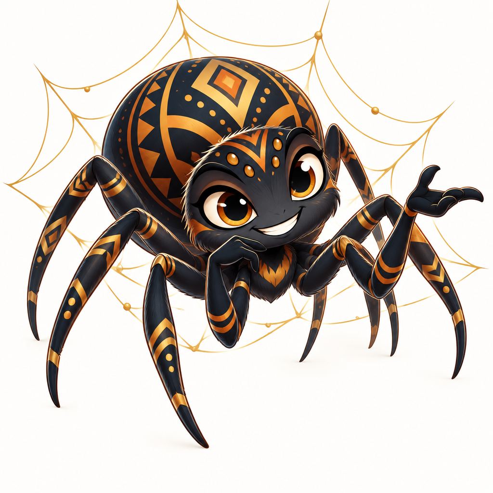

아난시 거미
- 이런 이야기예요
- 가나의 아샨티족 이야기예요. 옛날에는 세상의 모든 이야기를 하늘의 신 니아메가 가지고 있었어요. 거미 아난시가 이야기를 사고 싶다고 하자, 니아메는 비단뱀, 표범, 말벌 떼, 요정을 잡아 오라고 했지요.
- 이렇게 뒤집었어요
- 힘 대신 꾀를 썼어요. 비단뱀에게는 "네 몸이 이 나뭇가지보다 짧지?" 하고 내기를 걸어 가지에 묶었고, 말벌 떼에게는 물을 뿌리며 "비가 오니 이 박 속으로 들어와!" 하고 가두었어요. 결국 이야기는 모두 아난시의 것이 되어 온 세상에 퍼졌어요.
- 생각해 볼까요?
- 작은 거미가 힘센 동물들을 이길 수 있었던 까닭은 무엇일까요?
- 함께 읽을 책
- 게일 헤일리 『A Story, A Story』